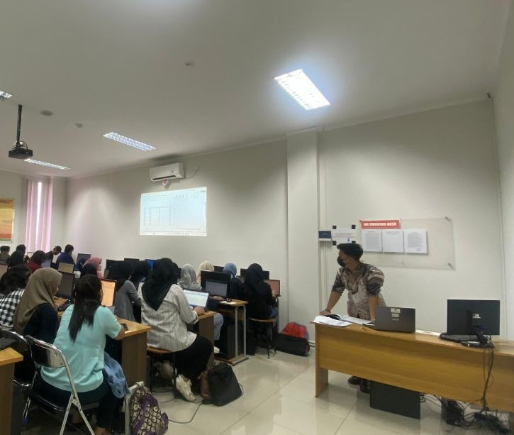
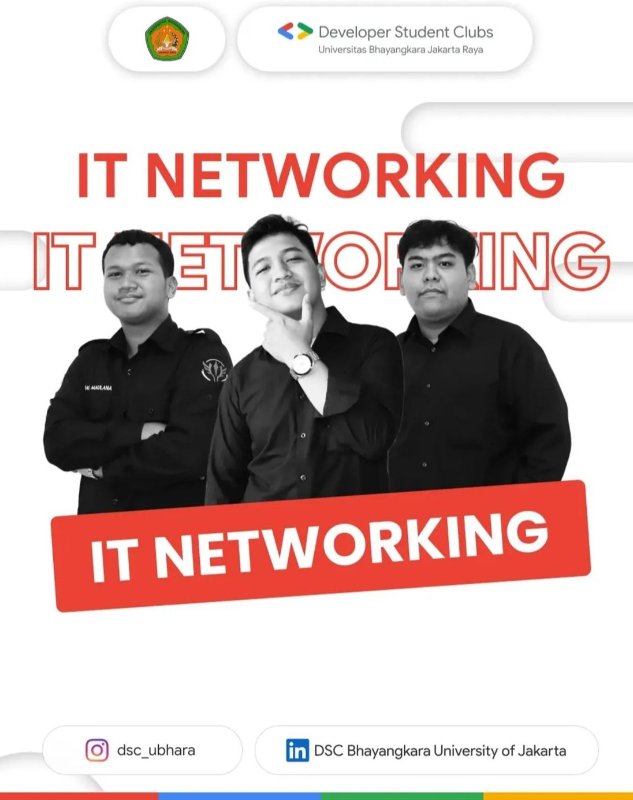
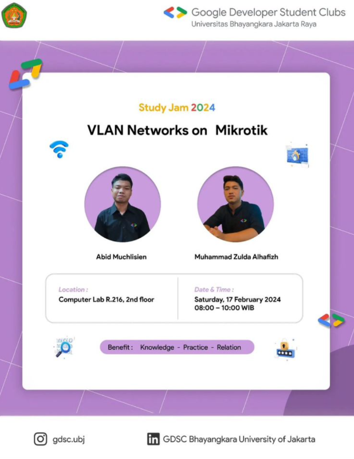

HR Generalist dengan pengalaman mengelola operasional HR harian untuk 100+ karyawan, termasuk rekrutmen end-to-end, payroll, absensi, administrasi HR, dokumen kepegawaian, serta GA support. Terlibat dalam menangani penyusunan SOP, pengarsipan HR, pemrosesan PKWT/PKWTT, serta HR documentation 100+ dokumen perbulan dan mendukung proses kepatuhan ketenagakerjaan. Memiliki sertifikat BNSP dan mengikuti berbagai pelatihan HR (Payroll, KPI, HRIS, Industrial Relations). Teliti, cepat beradaptasi, dan siap mendukung efektivitas fungsi HR di lingkungan kerja yang dinamis..
100+
Karyawan Dikelola
15+
Posisi Terisi (2 bln)
10+
SOP Diimplementasi
BNSP
Tersertifikasi
CV. Sumber Rezeki – Bekasi
Perusahaan Manufaktur Otomotif – Bekasi
Kombinasi administrasi teknis dan manajemen strategis SDM.
Meningkatkan Kepuasan Kerja Pada Karyawan Berdasarkan Analisis Pengaruh Keadilan Organisasi dan Beban Kerja dengan Motivasi Kerja Sebagai Variabel Intervening.
Staf Admin Pelatihan & Pengembangan
LSP Univ. Bhayangkara (BNSP) - Mei 2025
Analisis Beban Kerja, Uraian Jabatan, SI Pekerja, dan Administrasi Jaminan Sosial.
HRIS: Human Resources Info System
Quantum HR Indonesia - Agustus 2025
Planning, Analysis, Design, Implementasi, serta Maintenance & Evaluation HRIS.
Public Speaking Mastery
Quantum HR Indonesia - Agustus 2025
Styles of Speaking, Elevate Skills, Body Language, dan Teknik Handling Nervous.
Pelatihan Kompetensi HR
PT Wahana Insan Prima - Agustus 2025
Desain Organisasi Efektif, Langkah Praktis Pembuatan SOP, dan Kompensasi Jaminan Sosial.
HR Generalist Specialist
PT MSDM Indonesia - Juli 2025
Manajemen HR, Administrasi, Recruitment, UU Ketenagakerjaan, dan People Analytics.
Pelatihan HR Staff
Quantum HR Indonesia - Juli 2025
A-Z Recruitment, Payroll, Komponen Upah, Lembur, BPJS, dan Pembuatan SOP/Jobdesc.
Recruitment Staff Training
Quantum HR Indonesia - Juli 2025
Sourcing Channel, Selection Process, Offering, On boarding, dan Recruitment Metrics.
Key Performance Indicator (KPI)
Quantum HR Indonesia - Juli 2025
KPI Based on Jobdesc, Cascading KPI, Step by Step membuat KPI, dan Skor KPI.
Skill Admin Perkantoran
Quantum HR Indonesia - Juli 2025
Dasar Administrasi HR/Marketing, Pengelolaan Dokumen, dan Calendar Management.
Professional HR Payroll
PT MSDM Indonesia - Juli 2025
UU No 6/2023, Pph 21 TER & Natura, Iuran BPJS, dan Simulasi Proses Payroll.
CCNA 200-301 (Network)
IDN Training Center - Juli 2024
Network Fundamental, Network Access, IP Connectivity, dan IP Services.

FEB Universitas Bhayangkara Jakarta Raya | 2023 – 2025

UKM Developer Students Club Ubhara | 2024 – 2025

UKM GDSC Ubhara | 2023 – 2024